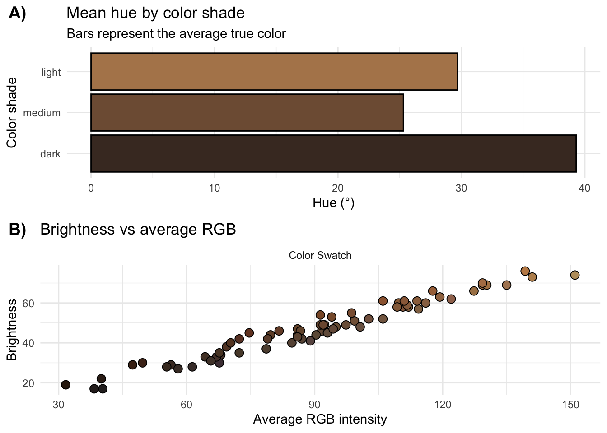
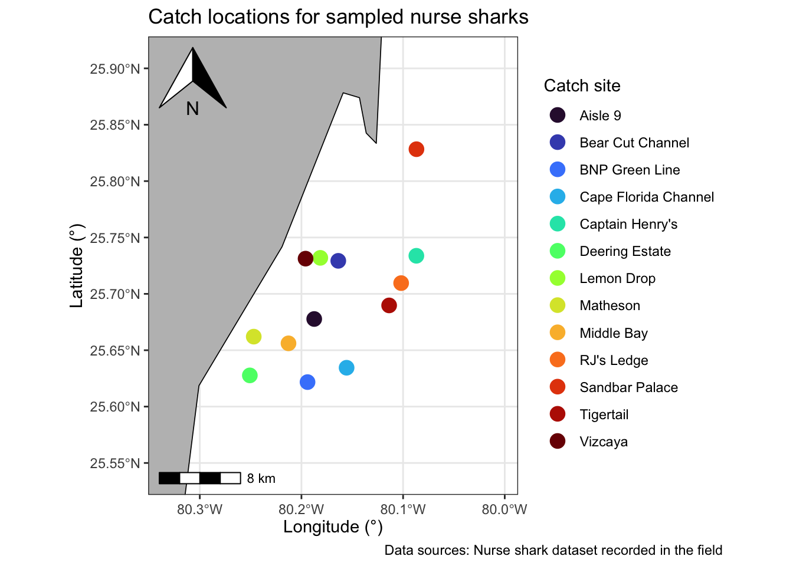

# Load packages
library(sf)
library(tidyverse)
library(janitor)
library(rnaturalearth)
library(ggspatial)
library(stringr)
library(cowplot)
# Load cleaned color data
nurse_color <- readRDS("data/processed/nurse_color.rds")
# Load catch site data
catch_sites <- read_csv("data/raw/CatchSiteCoordinates.csv") |>
clean_names() |>
select(tag, site, gps_start) |>
filter(tag %in% nurse_color$tag)
# Merge datasets and remove incomplete rows
nurse_color_full <- nurse_color |>
left_join(catch_sites, by = "tag", relationship = "many-to-many") |>
drop_na(site, gps_start) |>
distinct(tag, .keep_all = TRUE)
# Convert GPS coordinates from degrees-minutes to decimal
convert_gps_simple <- function(x) {
parts <- str_split(x, " ", simplify = TRUE)
lat_raw <- parts[1]
lon_raw <- parts[2]
lat_deg <- as.numeric(str_extract(lat_raw, "\\d+(?=')"))
lat_min <- as.numeric(str_extract(lat_raw, "(?<=')\\d+\\.\\d+"))
lon_deg <- as.numeric(str_extract(lon_raw, "\\d+(?=')"))
lon_min <- as.numeric(str_extract(lon_raw, "(?<=')\\d+\\.\\d+"))
tibble(
latitude = lat_deg + lat_min / 60,
longitude = -(lon_deg + lon_min / 60)
)
}
coords <- map_dfr(nurse_color_full$gps_start, convert_gps_simple)
nurse_color_full <- bind_cols(nurse_color_full, coords) |>
select(-gps_start)
# Convert merged dataset to an sf object for mapping
catch_sites_sf <- nurse_color_full |>
group_by(site) |>
summarize(
longitude = mean(longitude),
latitude = mean(latitude),
.groups = "drop"
) |>
st_as_sf(coords = c("longitude", "latitude"), crs = 4326)Drivers of differences in nurse shark color variation
Analyzing how environmental and biological factors influence nurse shark coloration
Introduction
Nurse sharks have been observed to display a range of different shades of body coloration, from lighter blonde, to darker shades of brown. There is currently very little research on shark coloration, resulting in a large knowledge gap. Understanding what drives these color differences can help improve field-based color measurement methods, identify biological patterns, and support future ecological research. This project analyzes how environmental and biological variables could influence differences in nurse shark coloration. This report presents all project components developed throughout the semester, including data processing, color visualizations, and spatial mapping of nurse shark catch sites.
Objectives
The main objective of this project is to analyze the drivers of differences in nurse shark coloration. In order to do this, correlations between environmental and biological factors and color data extracted from photos of nurse sharks out in the field will be analyzed. Specifically, I aim to explore relationships between measured color metrics and sampling conditions, and to visualize the spatial distribution of catch locations. This work provides a foundation for future analyses that will examine environmental or biological influences on shark color.
Data sources
The data for this project come from two sources collected in the field:
- Nurse shark color dataset
This dataset contains measurements of color extracted from photographs of individual sharks. It includes the following variables:
- tag: unique identifier for each shark
- color_shade: categorical shade classification (dark, medium, light)
- h: hue in degrees
- s: saturation
- br: brightness
- r, g, b: red, green, and blue color components
- hex: hexadecimal color code
- avg_rgb: average RGB intensity
- photo_type: type of photo
- Catch site dataset
This dataset includes GPS coordinates for the locations where sharks were captured. Key variables include:
- tag: shark identifier
- site: catch site name
- gps_start: starting coordinates
- gps_end: ending coordinates
In total, there are two datasets. The color dataset primarily contains numeric and categorical variables describing shark coloration, while the catch site dataset contains character variables for site names and GPS coordinates, which are later converted to numeric latitude and longitude for mapping.
These datasets are merged using the tag identifier, allowing combined analyses of shark coloration and spatial distribution.
Data processing
To prepare the data for visualization and analysis, several steps were performed to clean, transform, and combine the datasets:
- Standardizing and cleaning – Raw column names in both datasets were standardized using janitor::clean_names() to ensure consistent naming conventions.
- Filtering missing data – Rows with missing or incomplete values for key variables such as site or gps_start were removed to avoid errors in downstream analyses.
- Creating factors and numeric summaries – Variables such as photo_type and photo_wb were converted into factors. A new numeric variable, avg_rgb, was calculated to quantify overall brightness of each shark’s color.
- Categorizing color shades – Sharks were grouped into dark, medium, or light shades based on avg_rgb values.
- Processing GPS coordinates – GPS coordinates in degrees-minutes format were converted into decimal degrees using a custom function.
- Merging datasets – The color and catch site datasets were merged on the tag identifier. Any duplicated entries were removed to retain unique observations.
- Spatial preparation – The merged data was converted into an sf object, allowing for spatial visualization on maps.
- These steps ensured that both datasets were tidy, consistent, and ready for visualization, meeting the project objectives of analyzing color patterns and mapping catch locations.
The code below is the cleaned and final dataset loading and processing pipeline:
Main findings
The analysis of nurse shark coloration and catch locations revealed several important patterns which are demonstrated in the figures below.
Figure 1: Color metrics
Figure 1 summarizes the color metrics of the sampled sharks. Panel A shows the mean hue for each color shade, indicating that darker shades tend to have lower hue values while lighter shades exhibit higher hue values. Panel B plots brightness versus average RGB intensity, revealing a strong positive relationship: sharks with higher average RGB values tend to be brighter, and this relationship holds across different photo types. These plots together demonstrate that the categorical color shade assignments (dark, medium, light) are supported by quantitative measurements of hue, brightness, and RGB composition.
# Summarize by color shade
shade_summary <- nurse_color |>
group_by(color_shade) |>
summarize(
mean_hue = mean(h, na.rm = TRUE),
mean_r = mean(r, na.rm = TRUE),
mean_g = mean(g, na.rm = TRUE),
mean_b = mean(b, na.rm = TRUE),
.groups = "drop"
) |>
mutate(representative_color = rgb(mean_r/255, mean_g/255, mean_b/255))
# Plot mean hue
p1 <- ggplot(shade_summary, aes(x = mean_hue, y = color_shade, fill = representative_color)) +
geom_col(color = "black") +
scale_fill_identity() +
theme_minimal() +
labs(
title = "Mean hue by color shade",
subtitle = "Bars represent the average true color",
x = "Hue (°)",
y = "Color shade"
)
# Brightness vs average RGB
p2 <- nurse_color |>
ggplot(aes(x = avg_rgb, y = br, fill = hex)) +
geom_point(shape = 21, color = "black", size = 3) +
scale_fill_identity() +
facet_wrap(~photo_type) +
theme_minimal() +
labs(
title = "Brightness vs average RGB",
x = "Average RGB intensity",
y = "Brightness"
)
cowplot::plot_grid(p1, p2, labels = c("A)", "B)"), ncol = 1)

These figures illustrate two major patterns: 1. Sharks in the “dark” shade category tend to have lower mean hue values and darker representative colors. 2. Brightness increases with average RGB intensity, though this relationship varies across photo types, indicating that photographic settings may influence measured colors.
Figure 2: Catch site map
Figure 2 maps the catch sites of the sampled sharks, with each point representing the average location of individuals captured at a site. Some sites contained more sampled sharks than others, reflecting either spatial variation in shark abundance or sampling effort. By combining spatial and color data, the analysis allows for exploration of potential geographic patterns in coloration, such as whether certain shades are more common at particular sites. Overall, these figures highlight the variability in shark coloration and the distribution of individuals across the study area, providing a foundation for further ecological or behavioral analyses.
# Summarize by catch site (one point per site)
catch_sites_sf <- nurse_color_full |>
group_by(site) |>
summarize(
longitude = mean(longitude),
latitude = mean(latitude),
.groups = "drop") |>
st_as_sf(coords = c("longitude", "latitude"), crs = 4326)
# Get world coastline for context
coast <- ne_countries(scale = "medium", returnclass = "sf")
# Set limits to zoom in around catch sites
xlims <- range(st_coordinates(catch_sites_sf)[,1]) + c(-0.1, 0.1)
ylims <- range(st_coordinates(catch_sites_sf)[,2]) + c(-0.1, 0.1)
# Create even x-axis breaks
x_breaks <- pretty(xlims, n = 4)
# Create my map
p <- ggplot() +
# Base layer
geom_sf(data = coast, fill = "gray", color = "black", linewidth = 0.3) +
geom_sf(data = catch_sites_sf, aes(color = site), size = 4) +
# Zoom in to just the catch sites
coord_sf(xlim = xlims, ylim = ylims, expand = FALSE) +
scale_x_continuous(breaks = x_breaks) +
scale_y_continuous() +
scale_color_viridis_d(option = "turbo") +
theme_bw() +
annotation_north_arrow(location = "tl") +
annotation_scale(location = "bl") +
labs(
title = "Catch locations for sampled nurse sharks",
x = "Longitude (°)",
y = "Latitude (°)",
color = "Catch site",
caption = "Data sources: Nurse shark dataset recorded in the field") +
theme(
plot.caption.position = "plot",
plot.caption = element_text(hjust = 1),
axis.text.x = element_text(angle = 0, vjust = 0.5))
p

This map shows the spatial distribution of catch locations. The sites are clustered in a relatively small geographic area, with slight latitudinal variation among sampling locations.
References
No external references were used in this project.